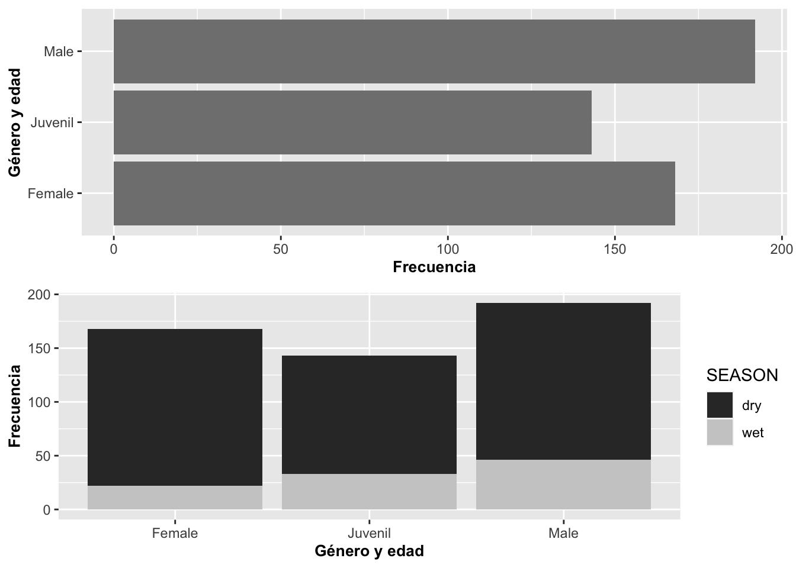

Gráficos de barras con geom_bar
Fecha de la ultima revisión
## [1] "2022-01-10"

library(tidyverse)
library(ggversa)
library(janitor)
DW=dipodium
DW=clean_names(DW)Una variable discreta: Gráfico de barras con geom_bar
El gráfico de barras es una representación de la frecuencia de ocurrencia de eventos para valores discretos; por ejemplo, sí o no, o valores categóricos. La función geom_bar genera un gráfico que tabula la cantidad de veces que ocurre un evento. La altura de las barras representa el número de observaciones de una categoría discreta representada en el eje de X.
En el siguiente ejemplo, primero removeremos los NA del archivo usando drop_na(), es el función que excluye todas las filas que contienen los NA. Nuevamente utilizaremos el archivo de datos de la Dipodium rosea:
# DW$Number_of_Flowers # Antes de hacer los análisis mira los datos, y vea que hay muchas filas con **NA**, remueve **#** para activar la función.
# Method 1
head(DW)## # A tibble: 6 × 21
## tree_number tree_species dbh plant_number ramet_number distance orientation
## <int> <chr> <dbl> <int> <int> <dbl> <dbl>
## 1 1 E.o 75 1 1 2.47 40
## 2 1 E.o 76 2 1 1.97 50
## 3 2 E.o 76 3 1 1.95 350
## 4 3 E.o 58 4 1 3.24 210
## 5 4 E.o NA 5 1 0.85 80
## 6 5 E.o 59 6 1 2.62 160
## # … with 14 more variables: number_of_flowers <int>, height_inflo <int>,
## # herbivory <chr>, row_position_nf <int>, number_flowers_position <int>,
## # number_of_fruits <int>, perc_fr_set <dbl>, pardalinum_or_roseum <chr>,
## # fruit_position_effect <int>, frutos_si_o_no <int>,
## # p_or_r_infl_lenght <chr>, num_of_fruits <int>, species_name <chr>,
## # cardinal_orientation <int>DW %>%
drop_na(number_of_flowers)%>%
ggplot(aes(number_of_flowers))+
geom_bar(fill="red",color="white")+
xlab("Cantidad de Flores")+
ylab("Frecuencia")+
theme(axis.title=element_text(size=14,face="bold"))
Cambio de intensidad de color con alpha
Se puede cambiar la intensidad del color de las barras usando alpha. los valores pueden variar de 0 a 1, donde 1 es mas intenso el color, aquí se utiliza un alpha=0.3.
head(DW)## # A tibble: 6 × 21
## tree_number tree_species dbh plant_number ramet_number distance orientation
## <int> <chr> <dbl> <int> <int> <dbl> <dbl>
## 1 1 E.o 75 1 1 2.47 40
## 2 1 E.o 76 2 1 1.97 50
## 3 2 E.o 76 3 1 1.95 350
## 4 3 E.o 58 4 1 3.24 210
## 5 4 E.o NA 5 1 0.85 80
## 6 5 E.o 59 6 1 2.62 160
## # … with 14 more variables: number_of_flowers <int>, height_inflo <int>,
## # herbivory <chr>, row_position_nf <int>, number_flowers_position <int>,
## # number_of_fruits <int>, perc_fr_set <dbl>, pardalinum_or_roseum <chr>,
## # fruit_position_effect <int>, frutos_si_o_no <int>,
## # p_or_r_infl_lenght <chr>, num_of_fruits <int>, species_name <chr>,
## # cardinal_orientation <int># [df(fila,columas)]
b=ggplot(DW[!is.na(DW$number_of_flowers),],
aes(number_of_flowers))
b+geom_bar(alpha=.3,
fill="blue",color="white")+
xlab("Posiciones de las \n flores en la inflorescencia")+
ylab("Frecuencia")+
theme(axis.title=element_text(size=14,face="bold"))

Figura: Lepanthes eltoroensis, EL Yunque, Puerto Rico
- Seleccione el archivo “Lelto” en el paquete “ggversa”. Seleccione la variable adultos o juvenil, que representa la cantidad de plantas adulto o juvenil que se encuentra en el árbol. Los datos son de una pequeñita orquídea que esta limitado las veredas del “El Toro” y de los “Vientos Alizios” en el Yunque.
- Mire el nombre de las columnas primero
- Cambie de color las barras
- Cambie el nombre de los nombres de los ejes
- Salva el gráfico con extensión de .png
- Sube el gráfico a Edmodo
Multiples grupos
Ahora le añadiremos una variable discreta que representa las frecuencias de las plantas con frutos y la frecuencia de plantas sin frutos para las posiciones de la flor en la inflorescencia. En el script se observa que la variable Frutos_si_o_no se identifica como un factor. Esto es necesario porque en el archivo de datos la presencia de frutos y flores fue identificada como 1 o 0 o sea valores numéricos. Si se hubiera identificado como Sí o No, no habría la necesidad de identificar que es un factor. En tal caso, es necesario identificar que estos valores son una categoría usando factor. El gráfico presenta las variables discretas una sobre la otra. Note en la Figura al igual que con geom_histogram, la frecuencia del segundo grupo es añadida a la frecuencia del primer grupo.
DW%>%
select(fruit_position_effect,frutos_si_o_no )%>%
drop_na(fruit_position_effect)%>%
ggplot(aes(fruit_position_effect))+
geom_bar(aes(fill=factor(frutos_si_o_no)))+
xlab("Posiciones de las \n flores en la inflorescencia")+
ylab("Frecuencia")+
theme(axis.title=element_text(size=14,face="bold"))+
scale_fill_manual(values = c("green", "#36211D"))+
scale_color_manual(values = c("yellow", "blue"))
head(Lelto)## Tree Trail Distance Alt_m Angulo Rango_rad Localizacion Inclinacion DBH
## 1 203 Tw 0 780 260 4.535556 230 50 18.1
## 2 204 Tw 228 783 158 2.756222 220 40 23.2
## 3 205 Tw 38 783 90 1.570000 30 30 10.6
## 4 206 Tw 28 785 355 6.192778 250 40 10.8
## 5 209 Tw 47 790 340 5.931111 260 55 14.1
## 6 210 Tw 7 790 350 6.105556 180 30 11.4
## Plantulas Juveniles Adultos T_Num Lado_vereda lat long
## 1 6 21 5 32 izquierda 18.2875 -65.80417
## 2 7 12 7 26 izquierda 18.2925 -65.80580
## 3 2 2 0 4 derecha 18.2922 -65.80670
## 4 6 21 5 32 izquierda 18.2919 -65.80640
## 5 5 10 0 15 derecha 18.2911 -65.80780
## 6 0 10 8 18 izquierda 18.2914 -65.80780Posicionar las barras uno al lado del otro
Para presentar los grupos uno al lado del otro se usa el parámetro position =“dodge”, lo que hará que cada grupo quede posicionado contiguamente. Además, removeremos la leyenda con guides(fill=FALSE) como se muestra a continuación con los datos de la Dipodium rosea:
DW%>%
select(fruit_position_effect,frutos_si_o_no )%>%
drop_na(fruit_position_effect)%>%
ggplot(aes(fruit_position_effect))+
geom_bar(aes(fill=factor(frutos_si_o_no)),color="white",
position = "dodge")+
xlab("Posiciones de las flores en la inflorescencia")+
ylab("Frecuencia")+
guides(fill=FALSE)+
theme(axis.title=element_text(size=14,face="bold"))## Warning: `guides(<scale> = FALSE)` is deprecated. Please use `guides(<scale> =
## "none")` instead.
Posicionar las barras una encima de la otra
En el próximo gráfico, la frecuencia de ambos grupos comienza en cero pero aún saldrán sobrepuestos uno al otro usando position=identity
DW%>%
select(fruit_position_effect,frutos_si_o_no )%>%
drop_na(fruit_position_effect)%>%
ggplot(aes(fruit_position_effect))+
geom_bar(aes(fill=factor(frutos_si_o_no)),color="white",
position = "identity")+ # Para que cada grupo comience en cero
xlab("Posiciones de las flores en la inflorescencia")+
ylab("Frecuencia")+
guides(fill=FALSE)+
theme(axis.title=element_text(size=14,face="bold"))## Warning: `guides(<scale> = FALSE)` is deprecated. Please use `guides(<scale> =
## "none")` instead.
Porcentaje porporcional a todos los valores
Para mostrar el porcentaje de cada uno de los grupos, tenemos que usar una fórmula para calcular la proporción por grupo usando y=(..count..)/sum(..count..). Así la suma de todas las barras equivale al 100%. Vemos que en las categorías altas (que aparecen más a la derecha en el gráfico) algunas barras están más anchas. Esto se debe a que, en el archivo de datos, para algunas de estas posiciones de las flores en la inflorescencia no hay información para la segunda especie (la que aparece en azul). Esto se puede resolver añadiendo la información en el archivo original.
fill=factor(Frutos_si_o_no)
DW%>%
select(fruit_position_effect,frutos_si_o_no )%>%
drop_na(fruit_position_effect)%>%
ggplot(aes(fruit_position_effect))+
geom_bar(aes(y=(..count..)/sum(..count..),
fill=factor(frutos_si_o_no)),
color="white", position="identity")+ # Para que cada grupo comience en cero se usa position = "identity"
xlab("Posiciones de las flores en la inflorescencia")+
ylab("Frecuencia")+
guides(fill=FALSE)+
theme(axis.title=element_text(size=14,face="bold"))## Warning: `guides(<scale> = FALSE)` is deprecated. Please use `guides(<scale> =
## "none")` instead.Porcentaje por valos de cada X
Para que cada barra represente el 100% de los grupos en el eje de X, se usa el parámetro position=“fill”. En el siguiente ejemplo se le añade la variable discreta en este caso; o sea, si la planta tiene frutos (verde) o no (rojo). Ecologicamente se observa que la posición de las flores arriba (>27) en la inflorescencia resulta en menos frutos porcentualmente que las posiciones más abajo.
require(scales)## Loading required package: scales##
## Attaching package: 'scales'## The following object is masked from 'package:purrr':
##
## discard## The following object is masked from 'package:readr':
##
## col_factorDW%>%
select(fruit_position_effect,frutos_si_o_no )%>%
drop_na(fruit_position_effect)%>%
ggplot(aes(factor(fruit_position_effect),
fill=factor(frutos_si_o_no)))+
geom_bar(aes(y=(..count..)/sum(..count..)),
position="fill")+ # Para que cada columna sume a 1.0 se usa position = "fill"
xlab("Posiciones de las flores en la inflorescencia")+
ylab("Proporción")+
guides(fill=FALSE)+
theme(axis.title=element_text(size=10,face="bold"))## Warning: `guides(<scale> = FALSE)` is deprecated. Please use `guides(<scale> =
## "none")` instead.
Seleccione el archivo “Lelto” en el paquete “ggversa”. Seleccione la variable adultos o juvenil, que representa la cantidad de plantas adulto o juvenil que se encuentra en el árbol. Los datos son de una pequeñita orquídea que esta limitado las veredas del “El Toro” y de los “Vientos Alizios” en el Yunque. Primero se va unir las columnas de juvenil con las de adultos, para después hacer un gráfico donde cada columna sume a 1.0 se usa position = “fill”.
– paso 1
head(Lelto)
– paso 2
df=Lelto %>% select(Juveniles, Adultos)
– paso 3
dfLelto = df%>% gather(key=“Estado”, value=“Conteos”) # gather( ) recuerda esta función, siempre me hace dificil encontrarla en el web.
– Mire el nombre de las columnas primero y como esta organiado
- Cambie de color las barras
- Cambie el nombre de los nombres de los ejes
- Salva el gráfico con extensión de .png
- Sube el gráfico a Edmodo
Reordenar las barras con geom_bar
En el siguiente gráfico, reordenamos la secuencia en X por orden del número de flores y su frecuencia. Primero, hay que crear una función para reordenar la variable, la que llamaremos reorder_size. El segundo paso es invocar esta función desde ggplot. La función es aplicable a cualquier variable que uno quisiera ordenar y tener como factor. En la figura podemos observar que en el muestreo hay solamente una planta con la siguiente cantidad de flores (1, 3, 4, 7, 8, 34, 36, 37, 43; extremo izquierda), y hay 13 plantas con 23 flores (extremo derecha) y otras frecuencias de plantas con diferentes cantidades de flores entre medio.
# Aquí se crea una función para re-ordenar la variable X.
reorder_size <- function(x) {
factor(x, levels = names(sort(table(x))))
}
DW%>%
select(number_of_flowers )%>%
drop_na(number_of_flowers)%>%
ggplot(aes(reorder_size(number_of_flowers)))+
geom_bar(fill="olivedrab")+
scale_y_continuous(breaks=c(0:13))+
labs(y="Número de plantas con la cantidad de flores",
x="Cantidad de flores \n en la inflorescencia")+
theme(axis.title=element_text(size=10,face="bold"))
Pirámides poblacionales con geom_bar
Un ejemplo interesante de geom_bar es cuando creamos pirámides poblacionales. Para el próximo ejemplo utilizaremos datos del censo de la base de datos de la Oficina del Censo de los EE. UU. US Census del 2015 sobre la población de Puerto Rico. Los datos representan la cantidad de mujeres en azul y hombres en rojo en categorías de edad; o sea, de 0 a 4 años, de 5 a 9 años y así sucesivamente. La última categoría incluye todos los puertorriqueños de 85 años o más. Para producir este gráfico, se generarán dos geom_bar uno al lado del otro; uno con los datos de Mujer (derecha) y otro con los datos de Hombre (izquierda).
Para especificar que se usen solamente los datos de un subgrupo de cada variable, se hace de la misma manera que en R; o sea,
subset(Pop_PR,Pop_PR$Sexo=="Mujer") # el "==" es para indicar que tiene que cu mplir con esta condición exclusivaTambién note que tenemos datos a la izquierda y a la derecha del valor de cero. Se produce este patrón usando {-Valor} en uno de los grupos, donde el valor es el tamaño poblacional por grupo de edad. Por último, se tiene que añadir coord_flip() para que las barras queden de forma horizontal.
ggversa::Pop_PR## Sexo Valor Edad
## 1 Hombre 89507 0
## 2 Hombre 102622 5
## 3 Hombre 112350 10
## 4 Hombre 124179 15
## 5 Hombre 125971 20
## 6 Hombre 111167 25
## 7 Hombre 99855 30
## 8 Hombre 104890 35
## 9 Hombre 104593 40
## 10 Hombre 106235 45
## 11 Hombre 107561 50
## 12 Hombre 102377 55
## 13 Hombre 93510 60
## 14 Hombre 89880 65
## 15 Hombre 70294 70
## 16 Hombre 50879 75
## 17 Hombre 32160 80
## 18 Hombre 28118 85
## 19 Mujer 85368 0
## 20 Mujer 97790 5
## 21 Mujer 105397 10
## 22 Mujer 118389 15
## 23 Mujer 122821 20
## 24 Mujer 113504 25
## 25 Mujer 109102 30
## 26 Mujer 116325 35
## 27 Mujer 115224 40
## 28 Mujer 118525 45
## 29 Mujer 124980 50
## 30 Mujer 121569 55
## 31 Mujer 113409 60
## 32 Mujer 109224 65
## 33 Mujer 87289 70
## 34 Mujer 65082 75
## 35 Mujer 46233 80
## 36 Mujer 47803 85# Para observar las primeras 4 filas del archivo
head(Pop_PR, n=50)## Sexo Valor Edad
## 1 Hombre 89507 0
## 2 Hombre 102622 5
## 3 Hombre 112350 10
## 4 Hombre 124179 15
## 5 Hombre 125971 20
## 6 Hombre 111167 25
## 7 Hombre 99855 30
## 8 Hombre 104890 35
## 9 Hombre 104593 40
## 10 Hombre 106235 45
## 11 Hombre 107561 50
## 12 Hombre 102377 55
## 13 Hombre 93510 60
## 14 Hombre 89880 65
## 15 Hombre 70294 70
## 16 Hombre 50879 75
## 17 Hombre 32160 80
## 18 Hombre 28118 85
## 19 Mujer 85368 0
## 20 Mujer 97790 5
## 21 Mujer 105397 10
## 22 Mujer 118389 15
## 23 Mujer 122821 20
## 24 Mujer 113504 25
## 25 Mujer 109102 30
## 26 Mujer 116325 35
## 27 Mujer 115224 40
## 28 Mujer 118525 45
## 29 Mujer 124980 50
## 30 Mujer 121569 55
## 31 Mujer 113409 60
## 32 Mujer 109224 65
## 33 Mujer 87289 70
## 34 Mujer 65082 75
## 35 Mujer 46233 80
## 36 Mujer 47803 85# Para observar las ultimas 4 filas del archivo
tail(Pop_PR, n=4)## Sexo Valor Edad
## 33 Mujer 87289 70
## 34 Mujer 65082 75
## 35 Mujer 46233 80
## 36 Mujer 47803 85ggplot(data=Pop_PR) +
geom_bar(aes(Edad,Valor,group=Sexo,fill=Sexo),
stat = "identity",
subset(Pop_PR,Pop_PR$Sexo=="Mujer"))+
geom_bar(aes(Edad,-Valor,group=Sexo,fill=Sexo), # nota el "negativo" antes de la
#variable "Valor", se le esta asignando un valor negativo a cada valor a los hombres.
stat = "identity",
subset(Pop_PR,Pop_PR$Sexo=="Hombre"))+
scale_y_continuous(breaks=seq(-140000,140000,40000),
labels=abs(seq(-140000,140000,40000))) +
coord_flip()+
ylab("Tamaño poblacional")+
theme(axis.title=element_text(size=10,face="bold"))#Population Pyramid de PR, del censo 2015.
# ggsave("Graficos/Piramide_PR_censo2015.png")
Pop_PR$SexoNum=as.numeric(Pop_PR$Sexo)
head(Pop_PR)## Sexo Valor Edad SexoNum
## 1 Hombre 89507 0 1
## 2 Hombre 102622 5 1
## 3 Hombre 112350 10 1
## 4 Hombre 124179 15 1
## 5 Hombre 125971 20 1
## 6 Hombre 111167 25 1Si no se le añade coord_flip(), el gráfico quedará representado con las barras de forma vertical (o en columnas).
unique(Pop_PR$Sexo)## [1] Hombre Mujer
## Levels: Hombre Mujerggplot(data=Pop_PR) +
geom_bar(aes(Edad,Valor,group=Sexo,fill=Sexo),
stat = "identity",
subset(Pop_PR,Pop_PR$Sexo=="Mujer"))+
geom_bar(aes(Edad,-Valor,group=Sexo,fill=Sexo),
stat = "identity",
subset(Pop_PR,Pop_PR$Sexo=="Hombre")) +
scale_y_continuous(breaks=seq(-140000,140000,40000),
labels=abs(seq(-140000,140000,40000))) +
ylab("Tamaño poblacional")+
theme(axis.title=element_text(size=10,face="bold"))
Seleccione el archivo “DominicanRepublic,csv” que se encuentra en la pestaña “Los datos”. Estos datos provienen las naciones unidas del siguiente enlace PoblacionEdad_genero, los datos fueron pre-selecionado a incluir solamente los datos la isla de la Republica Dominicana y no todos los países del mundo. Seleccione la variable solamente el país de “Dominican Republican”, mujeres y hombres, para el año de 2010, y el área solamente la población del campo. Que representa la cantidad de personas con esta edad en el muestreo censal del año 2013.
– paso 1
subir los datos
– paso 2
seleccionar las columnas y variables de interes
– paso 3
Producir una piramide de la poblacion de la Republica Dominicana
– Mire el nombre de las columnas primero y como esta organiado
- Cambie de color las barras
- Cambie el nombre de los nombres de los ejes
- Salva el gráfico con extensión de .png
- Sube el gráfico a Edmodo
Patrones de temperatura en tiempo con geom_bar
Este tipo de representación puede ser efectiva para mostrar patrones en donde los valores son negativos y positivos; por ejemplo, la temperatura. Para demostrarlo, ahora daremos un ejemplo que proviene del pueblo de Asbestos, Quebec, Canadá. Los datos fueron extraídos de la base de datos de http://climate.weather.gc.ca/historical_data/search_historic_data_e.html (identifier 7020360). El archivo de datos contiene la temperatura promedio (por mes) de la máxima y la mínima del 1948 al 1987. Seleccionaremos solamente un conjunto limitado de los datos del año 1963 al 1968. Además, tendremos que voltear la información alrededor del eje de X para que se pueda leer, tal como se demuestra en la Figura. El primer paso es identificar que la variable Fecha es de tipo dato secuencial fecha y tiempo. El segundo paso es identificar si los valores de temperatura máxima están por debajo o por encima del punto de congelación, < 0C°, o > 0C°, creando una nueva columna que aquí llamamos NegPos. El tercer paso es usar solamente un subgrupo de información del archivo para mejorar la representación, ya que este tiene datos del 1948 al 1987. Se seleccionan los años 1963 al 1966.
Primero miramos los datos
names(ASBESTOS_QUEBEC)## [1] "Year" "Mes" "Temp_Prom_Max" "Temp_Prom_Min"
## [5] "Fecha" "day1" "fecha" "diaanual"head(ASBESTOS_QUEBEC)## Year Mes Temp_Prom_Max Temp_Prom_Min Fecha day1 fecha diaanual
## 1 1948 6 22.2 9.9 1948-06 1 1948-06-01 153
## 2 1948 7 25.5 14.2 1948-07 1 1948-07-01 183
## 3 1948 8 24.9 14.2 1948-08 1 1948-08-01 214
## 4 1948 9 21.6 8.4 1948-09 1 1948-09-01 245
## 5 1948 10 12.0 2.6 1948-10 1 1948-10-01 275
## 6 1948 11 10.3 1.9 1948-11 1 1948-11-01 306is.data.frame(ASBESTOS_QUEBEC) # para determinar si el archivo es un data frame?## [1] TRUEattach(ASBESTOS_QUEBEC)Identificar que la variable “Fecha” es una variable de tiempo. Habrá un modulo para discutir solamente de fechas y horas.
# Identificar que la variable "Fecha" es una variable de tiempo.
names(ASBESTOS_QUEBEC)[names(ASBESTOS_QUEBEC) == 'Date.Time'] <- 'Fecha'
head(ASBESTOS_QUEBEC, n=15)## Year Mes Temp_Prom_Max Temp_Prom_Min Fecha day1 fecha diaanual
## 1 1948 6 22.2 9.9 1948-06 1 1948-06-01 153
## 2 1948 7 25.5 14.2 1948-07 1 1948-07-01 183
## 3 1948 8 24.9 14.2 1948-08 1 1948-08-01 214
## 4 1948 9 21.6 8.4 1948-09 1 1948-09-01 245
## 5 1948 10 12.0 2.6 1948-10 1 1948-10-01 275
## 6 1948 11 10.3 1.9 1948-11 1 1948-11-01 306
## 7 1948 12 1.4 -7.8 1948-12 1 1948-12-01 336
## 8 1949 1 -1.9 -12.3 1949-01 1 1949-01-01 1
## 9 1949 2 NA NA 1949-02 1 1949-02-01 32
## 10 1949 3 1.4 -9.2 1949-03 1 1949-03-01 60
## 11 1949 4 10.6 0.2 1949-04 1 1949-04-01 91
## 12 1949 5 17.6 5.0 1949-05 1 1949-05-01 121
## 13 1949 6 24.4 12.9 1949-06 1 1949-06-01 152
## 14 1949 7 26.6 17.7 1949-07 1 1949-07-01 182
## 15 1949 8 25.4 13.9 1949-08 1 1949-08-01 213Crear la nueva variable Temp_Prom_Max;
Aquí se crea una nueva columna con para identificar si los datos son positivos o negativos, si es positiva = “TRUE”, si es negativa = “FALSE”.
ASBESTOS_QUEBEC$NegPos=ASBESTOS_QUEBEC$Temp_Prom_Max>=0
tail(ASBESTOS_QUEBEC)## Year Mes Temp_Prom_Max Temp_Prom_Min Fecha day1 fecha diaanual
## 461 1986 10 10.5 2.7 1986-10 1 1986-10-01 274
## 462 1986 11 2.2 -5.7 1986-11 1 1986-11-01 305
## 463 1986 12 NA NA 1986-12 1 1986-12-01 335
## 464 1987 1 NA NA 1987-01 1 1987-01-01 1
## 465 1987 2 -7.8 -18.6 1987-02 1 1987-02-01 32
## 466 1987 3 3.3 -6.4 1987-03 1 1987-03-01 60
## NegPos
## 461 TRUE
## 462 TRUE
## 463 NA
## 464 NA
## 465 FALSE
## 466 TRUESelecionar solamente un subgrupo de los datos
ASBESTOSsub=subset(ASBESTOS_QUEBEC, Year>1962 & Year<1967) # 1963 al 1966
head(ASBESTOSsub)## Year Mes Temp_Prom_Max Temp_Prom_Min Fecha day1 fecha diaanual
## 176 1963 1 -6.6 -12.7 1963-01 1 1963-01-01 1
## 177 1963 2 -9.0 -16.7 1963-02 1 1963-02-01 32
## 178 1963 3 0.6 -8.8 1963-03 1 1963-03-01 60
## 179 1963 4 8.2 -0.9 1963-04 1 1963-04-01 91
## 180 1963 5 16.9 5.7 1963-05 1 1963-05-01 121
## 181 1963 6 23.1 12.3 1963-06 1 1963-06-01 152
## NegPos
## 176 FALSE
## 177 FALSE
## 178 TRUE
## 179 TRUE
## 180 TRUE
## 181 TRUEUniendo las partes para crear el gráfico
ggplot(data=ASBESTOSsub,
aes(x=Fecha, y=Temp_Prom_Max, fill=NegPos)) +
geom_bar(stat = "identity", position="identity")+
theme(axis.text.x=element_text(angle=90))+
guides(fill=FALSE)+
xlab("Fecha")+
ylab("Temperatura promedio máxima por mes en Celsius")+
theme(axis.title=element_text(size=10,face="bold"))## Warning: `guides(<scale> = FALSE)` is deprecated. Please use `guides(<scale> =
## "none")` instead.## Warning: Removed 2 rows containing missing values (geom_bar).
- Usando los datos de Anchorage, Alaska que se encuentra en la sección de datos del website, evaluar el patrón de temperatura mínima en los diferentes meses del año. Convertir los datos de Farenheit a Celcius.
library(readr)
Anchorage_ALASKA <- read_csv("Data/Anchorage_ALASKA.csv")## Rows: 20 Columns: 13## ── Column specification ────────────────────────────────────────────────────────
## Delimiter: ","
## dbl (13): Year, Jan, Feb, Mar, Apr, May, Jun, Jul, Aug, Sep, Oct, Nov, Dec##
## ℹ Use `spec()` to retrieve the full column specification for this data.
## ℹ Specify the column types or set `show_col_types = FALSE` to quiet this message.Anchorage_ALASKA## # A tibble: 20 × 13
## Year Jan Feb Mar Apr May Jun Jul Aug Sep Oct Nov Dec
## <dbl> <dbl> <dbl> <dbl> <dbl> <dbl> <dbl> <dbl> <dbl> <dbl> <dbl> <dbl> <dbl>
## 1 2000 -10 7 11 20 30 37 44 36 27 16 13 4
## 2 2001 8 2 12 12 24 42 48 45 33 2 0 -15
## 3 2002 -11 -5 0 6 27 37 47 43 32 26 20 -2
## 4 2003 0 13 -1 16 33 42 47 45 28 22 -8 -14
## 5 2004 -18 1 -1 1 27 38 48 46 27 20 0 0
## 6 2005 -7 -8 16 20 33 38 50 42 39 16 -5 -1
## 7 2006 -11 -10 -1 19 28 40 46 44 32 17 -9 -2
## 8 2007 -17 -8 -3 16 33 39 48 45 35 21 16 -9
## 9 2008 -10 -15 13 15 31 38 40 42 29 8 5 -15
## 10 2009 -24 -10 -3 11 32 40 46 44 30 22 -8 -4
## 11 2010 -2 0 -5 21 32 42 46 45 25 21 4 -8
## 12 2011 -12 -4 1 22 29 42 47 43 32 15 -9 -1
## 13 2012 -15 6 0 22 28 41 46 42 30 12 1 -12
## 14 2013 -9 5 0 8 28 42 50 42 28 27 -8 -11
## 15 2014 10 0 5 17 34 40 48 42 32 16 14 13
## 16 2015 -5 0 -2 25 33 46 50 40 28 19 -8 4
## 17 2016 10 14 16 29 34 42 51 44 32 15 1 -8
## 18 2017 -15 -8 -8 26 32 42 45 46 36 19 1 5
## 19 2018 0 -2 7 20 32 41 47 44 40 20 14 10
## 20 2019 -7 0 8 27 35 47 51 45 32 26 11 -2# gather the data in columns
# Paso 1
AA<-gather(Anchorage_ALASKA,
key= "Mes",
value="Temp_min_F",
-Year)
AA ## # A tibble: 240 × 3
## Year Mes Temp_min_F
## <dbl> <chr> <dbl>
## 1 2000 Jan -10
## 2 2001 Jan 8
## 3 2002 Jan -11
## 4 2003 Jan 0
## 5 2004 Jan -18
## 6 2005 Jan -7
## 7 2006 Jan -11
## 8 2007 Jan -17
## 9 2008 Jan -10
## 10 2009 Jan -24
## # … with 230 more rows# Identificar que el Año y Mes son variables de tiempo
#Paso 2
numMonth<-function(x)
c(jan=1,feb=2,mar=3,apr=4,may=5,jun=6,jul=7,aug=8,sep=9,oct=10,nov=11,dec=12)[tolower(x)]
AA$Fecha=numMonth(AA$Mes)
tail(AA)## # A tibble: 6 × 4
## Year Mes Temp_min_F Fecha
## <dbl> <chr> <dbl> <dbl>
## 1 2014 Dec 13 12
## 2 2015 Dec 4 12
## 3 2016 Dec -8 12
## 4 2017 Dec 5 12
## 5 2018 Dec 10 12
## 6 2019 Dec -2 12#Paso 3
library(zoo)##
## Attaching package: 'zoo'## The following objects are masked from 'package:base':
##
## as.Date, as.Date.numericAA$FechasMA <- as.yearmon(paste(AA$Year, AA$Fecha), "%Y %m")
head(AA)## # A tibble: 6 × 5
## Year Mes Temp_min_F Fecha FechasMA
## <dbl> <chr> <dbl> <dbl> <yearmon>
## 1 2000 Jan -10 1 Jan 2000
## 2 2001 Jan 8 1 Jan 2001
## 3 2002 Jan -11 1 Jan 2002
## 4 2003 Jan 0 1 Jan 2003
## 5 2004 Jan -18 1 Jan 2004
## 6 2005 Jan -7 1 Jan 2005# Paso 4
AA$NegPos=AA$Temp_min_F>=32
head(AA)## # A tibble: 6 × 6
## Year Mes Temp_min_F Fecha FechasMA NegPos
## <dbl> <chr> <dbl> <dbl> <yearmon> <lgl>
## 1 2000 Jan -10 1 Jan 2000 FALSE
## 2 2001 Jan 8 1 Jan 2001 FALSE
## 3 2002 Jan -11 1 Jan 2002 FALSE
## 4 2003 Jan 0 1 Jan 2003 FALSE
## 5 2004 Jan -18 1 Jan 2004 FALSE
## 6 2005 Jan -7 1 Jan 2005 FALSEAA$Temp_C=(AA$Temp_min_F-32)*5/9
head(AA)## # A tibble: 6 × 7
## Year Mes Temp_min_F Fecha FechasMA NegPos Temp_C
## <dbl> <chr> <dbl> <dbl> <yearmon> <lgl> <dbl>
## 1 2000 Jan -10 1 Jan 2000 FALSE -23.3
## 2 2001 Jan 8 1 Jan 2001 FALSE -13.3
## 3 2002 Jan -11 1 Jan 2002 FALSE -23.9
## 4 2003 Jan 0 1 Jan 2003 FALSE -17.8
## 5 2004 Jan -18 1 Jan 2004 FALSE -27.8
## 6 2005 Jan -7 1 Jan 2005 FALSE -21.7AA$NegPosC=AA$Temp_C>=0ggplot(data=AA,
aes(x=FechasMA, y=Temp_C, fill=NegPosC)) +
geom_bar(stat = "identity", position="identity")+
theme(axis.text.x=element_text(angle=90))+
guides(fill=FALSE)+
xlab("Fecha")+
ylab("Temperatura promedio máxima por mes en Celsius")+
theme(axis.title=element_text(size=10,face="bold"))## Warning: `guides(<scale> = FALSE)` is deprecated. Please use `guides(<scale> =
## "none")` instead.Gráfico de barras: Ajuste de posiciones con geom_bar
A veces queremos hacer que las barras luzcan de diferentes maneras; por ejemplo, que las posiciones de las barras no salgan verticales o tan gruesas. Además, se puede modificar la representación de las barras para que la altura de ellas no represente el número de observaciones; por ejemplo, que represente una suma sobre otra variable.
Los datos que utilizaremos para la próxima demostración provienen del archivo de lagartos Anolis que contiene información sobre su edad, sexo, periodo de muestreo y localidad donde fueron muestreados.
library(ggversa)
names(Anolis)## [1] "STUDY" "Survey_Site"
## [3] "LOCATION" "TIME"
## [5] "DATE" "SEASON"
## [7] "SPECIES" "SEX_AGE"
## [9] "HEIGHT" "DISTANCE_FROM_CENTERLINE"
## [11] "PERCH_SUBSTRATE" "PERCH_DIAMETER"
## [13] "WEIGHT" "SVL"
## [15] "TAIL"El primer gráfico a continuación, produce por omisión barras negras que representan la suma de la cantidad de observaciones.
barraA=ggplot(Anolis, aes(SEX_AGE))
barraA+geom_bar(fill=grey(.3))+
theme(axis.title=element_text(size=14,face="bold"))En el segundo, el ancho de las barras fue reducido para que se vean menos angostas usando la opción width, ene ejemplo se reduce el ancho de las barras width=.3. Además, se cambia la descripción de los ejes al castellano. También selecciono un otro color de gris y se modifico su intensidad con fill=grey(.5).
barraA=ggplot(Anolis, aes(SEX_AGE))
barraA+geom_bar(width=.3, fill=grey(.5))+
labs(y="Frecuencia", x="Género y edad")+
theme(axis.title=element_text(size=10,face="bold"))
En el tercer grafico las barras fueron rotadas usando la opción coord_flip() y puestas sobre lo que antes era el eje de Y. En el cuarto, se añadió una variable discreta como color; en este caso, fue usada la escala de color gris para distinguir entre la temporada seca dry la lluviosa wet. Si no se añade la opción scale_fill_grey(), las categorías tendrían color.
barraA=ggplot(Anolis, aes(SEX_AGE))
barraA+geom_bar(fill=grey(.5))+coord_flip()+
labs(y="Frecuencia", x="Género y edad")+
theme(axis.title=element_text(size=10,face="bold"))
barraA=ggplot(Anolis, aes(SEX_AGE, fill=SEASON))
barraA+geom_bar()+scale_fill_grey()+
labs(y="Frecuencia", x="Género y edad")+
theme(axis.title=element_text(size=10,face="bold")) ### Posiciones d elas barras
### Posiciones d elas barras
Si uno quiere posicionar las categorías una al lado de la otra, se usa (position={dodge}). El parámetro dodge le indica esquivar en el sentido de mover al lado.
barraA=ggplot(Anolis, aes(SEX_AGE,fill=SEASON))
barraA+geom_bar()+
labs(y="Frecuencia", x="Género y edad")+
theme(axis.title=element_text(size=10,face="bold"))
barraA=ggplot(Anolis, aes(SEX_AGE,fill=SEASON))
barraA+geom_bar(position="dodge")+
labs(y="Frecuencia", x="Género y edad")+
theme(axis.title=element_text(size=10,face="bold"))
Opciones y Parametros de geom_bar:
- ggplot(el archivo de datos, aes(la variable continua))
- geom_bar(stat=bin, x, y, alpha, color, fill, linetype, size)
- alpha: la intensidad del color
- fill: el color de la barra
- color: el color de la línea alrededor de la barra
- linetype: representa el estilo de línea
- size: representa el grosor de la línea
- weight; para modificar el valor original; entonces no sería, por ejemplo, el conteo/suma de los valores si no un valor ponderado (promedio ponderado).